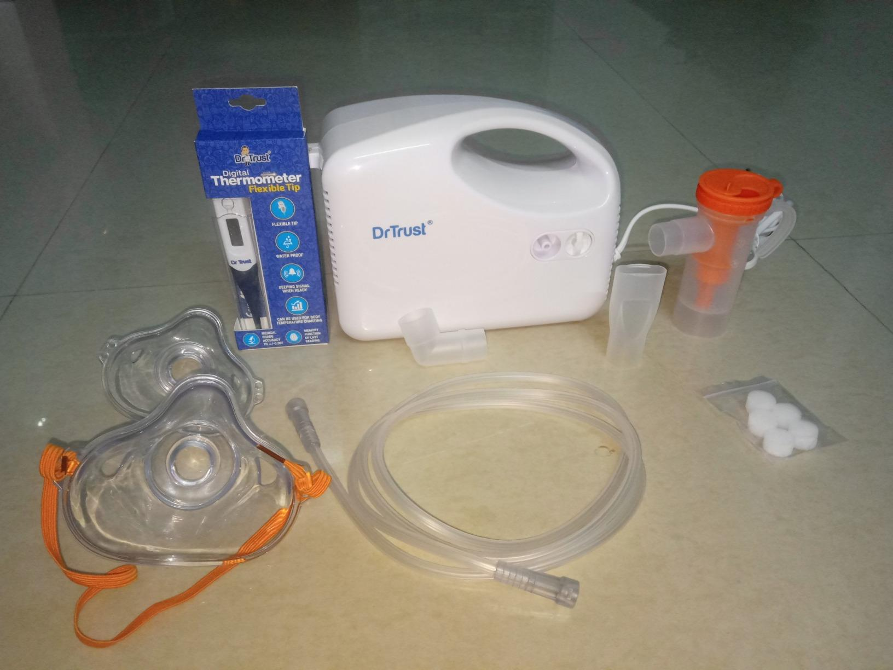

Dr Trust Nebulizer Machine Complete Kit for Adults and Kids with Mask

Price: ₹1,149
For latest discounts, please click on "Buy Now"
Why you should BUY!
The Dr Trust Nebulizer Machine Complete Kit is an essential healthcare device designed for both adults and kids. It provides effective and efficient medication delivery for respiratory conditions. The kit includes masks for both adults and children, ensuring a comfortable fit for all users. With its user-friendly design and reliable performance, this nebulizer machine is a must-have for managing respiratory health. Upgrade your healthcare routine with the Dr Trust Nebulizer Machine Complete Kit.
Rating: ★★★★☆ (4.2/5)
How to USE
Using the Dr Trust Nebulizer Machine Complete Kit is simple and straightforward:
- Assemble the nebulizer by connecting the air tube to the compressor and the medication cup.
- Fill the medication cup with the prescribed medication.
- Attach the mask or mouthpiece to the medication cup.
- Place the mask over your nose and mouth or put the mouthpiece in your mouth.
- Turn on the nebulizer machine and breathe in the medication mist slowly and deeply.
- Continue the treatment until the medication is finished, usually around 10-15 minutes.
- After use, clean the nebulizer parts according to the manufacturer's instructions.
- Store the nebulizer in a clean and dry place.
Ensure effective respiratory treatment with the Dr Trust Nebulizer Machine Complete Kit!
Buy Now
Go Back